Clasificador de actividades
| Código | Detalle | Imagen |
|---|---|---|
| 1 | Trabajar para un patrón o por cuenta propia Se toma en cuenta sólo la población ocupada en la producción de bienes y servicios con valor en el mercado. Incluye a asalariados, patrones o empleadores, cuentapropistas, trabajadores familiares no remunerados. Incluye también las capacitaciones y cursos relacionados con el trabajo. | |
| 13 | Buscar trabajo Consiste en la búsqueda laboral activa a fin de encontrar un trabajo asalariado o independiente (presentación de CV personalmente o vía Internet, distribución de carteles o volantes, asistencia a entrevistas, organización de un negocio o emprendimiento -gestiones, permisos- etc.). | 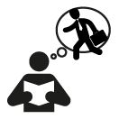 |
| 14 | Viajar para ir y volver al trabajo Desplazamiento desde y hasta el trabajo, lugares de reuniones o gestiones laborales. Incluye el tiempo de espera del transporte. | |
| 2 | Trabajar para consumo propio del hogar Comprende tareas de los miembros del hogar para uso propio: cultivo de vegetales y cría de animales, elaboración de conservas de alimentos y bebidas, confección de ropa, calzado, muebles, cerámica, etc., construcción de viviendas y otros edificios para uso final propio del hogar, y las actividades de traslado relacionadas. | |
| 31 | Preparar y servir la comida Reúne las siguientes actividades: cocinar, preparar, servir y empacar o guardar alimentos. Limpiar el comedor (colocar y sacar manteles, platos, cubiertos, etc.), la cocina y la vajilla (para preparar, servir y comer). Llevar fuera del hogar la comida a alguno de sus componentes (escuela, trabajo). | |
| 32 | Limpiar la casa Incluye el orden y la limpieza de la vivienda (baños, dormitorios, living, etc.) donde habita el hogar; muebles, cortinas, pisos del exterior y del interior, hacer y cambiar las camas, etc.; seleccionar o tirar la basura. Excluye la limpieza de los utensilios para preparar y servir comida. | |
| 33 | Lavar, planchar o arreglar la ropa Comprende lavar, tender y/o secar, planchar y guardar la ropa. Hacer reparaciones y arreglos en ropa y textiles (arreglos menores: parches, botones). Limpieza y mantenimiento de calzado. Llevar y retirar ropa, textiles y calzado a lavar, planchar o reparar (en este caso se debe contabilizar el tiempo de traslado). No incluye el tiempo de funcionamiento del lavarropas. | |
| 34 | Hacer reparaciones y mantenimiento de la vivienda Incluye mantenimiento, instalación y reparaciones menores en la vivienda, en los bienes del hogar y personales: revoque, pintura, trabajos de electricidad (cambiar focos, conexiones), de carpintería (lijar, barnizar, etc.), mantenimiento de muebles, aparatos eléctricos, utensilios, elementos decorativos. También comprende los trabajos en los vehículos de uso propio del hogar (cambio de aceite, lavar, encerar); si los trabajos se realizan fuera de la vivienda se debe incluir el tiempo de traslado ida y vuelta a la vivienda. No se incluyen actividades de construcción, aunque sean parciales. | 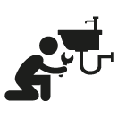 |
| 35 | Hacer pagos y trámites del hogar Comprende hacer trámites y pagar servicios, organizar documentos y presupuestos del hogar. Incluye también vigilar la seguridad del hogar (cerrar puertas y ventanas, guardar los vehículos o los animales del hogar). Incluye traslados y tiempos de espera. | |
| 36 | Hacer compras para el hogar Se refiere a compras para la elaboración de la comida, de bienes para el hogar (muebles, electrodomésticos) y para sus miembros (ropa, calzado, útiles escolares). También la compra de vehículos e inmuebles (terrenos, casas). Incluye traslados y tiempo de búsqueda para la elección de los productos a comprar. | |
| 37 | Cuidar mascotas y plantas Aseo, alimentación de mascotas; limpieza del lugar donde comen o duermen; incluye las visitas al veterinario y el tiempo de traslado y espera. Mantenimiento de las plantas del exterior e interior de la vivienda, riego, abono, poda, limpieza, corte de césped, juntado de hojas, etc. | |
| 411 | Cuidado personal a niños del hogar, menores de 14 años Incluye dar de comer, cargar, acostar, bañar, asear o arreglar, prepararlos para ir a la escuela, jugar, conversar, leer o estar pendiente, etc. Excluye a personas con discapacidad o dependencia permanente. | |
| 412 | Cuidados temporales de salud a niños del hogar, menores de 14 años Dar medicamentos, hacer curaciones, aplicar terapias, etc. Concurrir a servicios de salud, incluyendo tiempo de espera. Es independiente del lugar de asistencia del miembro del hogar. No incluye traslados, que se registran en el código 414. Excluye a personas con discapacidad o dependencia permanente. | 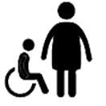 |
| 413 | Apoyo escolar y/o de aprendizaje a niños del hogar, menores de 14 años Apoyo en tareas escolares, asistencia a fiestas, reuniones u otras actividades escolares de miembros del hogar menores de 14 años. Excluye a personas con discapacidad o dependencia permanente. | |
| 414 | Acompañamiento y traslados a niños del hogar, menores de 14 años Acompañamiento y traslados a guarderías o escuelas, centros de salud u otros lugares (excursiones, museos, parques, etc.). Excluye a personas con discapacidad o dependencia permanente. | 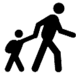 |
| 421 | Apoyo personal a miembros del hogar, entre 14 y 64 años Cuidados personales. Comprende actividades como supervisar las tareas escolares o el buen uso de la tecnología; asistir a reuniones de la escuela, apoyar el aprendizaje, etc. Incluye cuidado pasivo. Excluye a personas con discapacidad o dependencia permanente. | 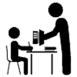 |
| 422 | Cuidados temporales de salud a miembros del hogar, entre 14 y 64 años Dar medicamentos, hacer curaciones, aplicar terapias, etc. Concurrir a servicios de salud, incluyendo tiempo de espera. Es independiente del lugar de asistencia del miembro del hogar. No incluye traslados, que se registran en el código 423. Excluye a personas con discapacidad o dependencia permanente. | 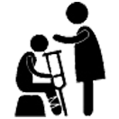 |
| 423 | Acompañamiento y traslados a miembros del hogar, entre 14 y 64 años Acompañamiento y traslados para las actividades de cuidado y apoyo personal o por motivos de salud. Comprende visitas al médico, a establecimientos educativos, actividades sociales o deportivas. Es independiente del lugar de asistencia del miembro del hogar. Excluye a personas con discapacidad o dependencia permanente. | 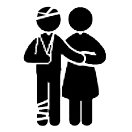 |
| 431 | Apoyo personal a miembros del hogar de 65 años o más Cuidados personales. Apoyo en la realización de gestiones o trámites; ayuda en el uso de tecnología, etc. Incluye cuidado pasivo. Excluye a personas con discapacidad o dependencia permanente. | 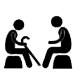 |
| 432 | Cuidados temporales de salud a miembros del hogar de 65 años o más Comprende la asistencia por enfermedad temporal, asistencia personal y visitas al médico (con tiempos de espera). No incluye traslado. Es independiente del lugar de asistencia del miembro del hogar. Excluye a personas con discapacidad o dependencia permanente. | 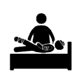 |
| 433 | Acompañamiento y traslados a miembros del hogar de 65 años o más Acompañamiento y traslados para las actividades de cuidado y apoyo personal o por motivos de salud. Comprende visitas al médico, actividades sociales o deportivas, gestiones legales, administrativas o financieras, etc. Es independiente del lugar de asistencia del miembro del hogar. Excluye a personas con discapacidad o dependencia permanente. | 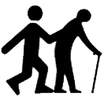 |
| 441 | Apoyo personal a miembros del hogar con discapacidad o dependencia permanente (todas las edades) Cuidado y apoyo; incluye dar de comer, cargar, acostar, bañar, asear o arreglar, jugar, conversar, leer o estar pendiente. | |
| 442 | Cuidados de salud a miembros del hogar con discapacidad o dependencia permanente (todas las edades) Comprende la asistencia por enfermedad temporal o crónica, asistencia personal y visitas al médico (con tiempos de espera). No incluye traslado. Es independiente del lugar de asistencia del miembro del hogar. | 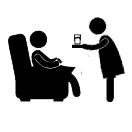 |
| 443 | Acompañamiento y traslados a miembros del hogar con discapacidad o dependencia permanente (todas las edades) Acompañamiento y traslados para las actividades de cuidado y apoyo personal o por motivos de salud. Comprende vistas al médico, actividades sociales o deportivas, gestiones legales, administrativas o financieras, etc. Es independiente del lugar de asistencia del miembro del hogar. | 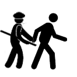 |
| 51 | Ayuda a otros hogares (trabajo no remunerado para otros hogares) Quehaceres domésticos (limpiar, cocinar, pagos de facturas, cuidados de mascotas, etc) y cuidado a personas de otros hogares, siempre que se trate de tareas NO remuneradas. Incluye tiempo de traslado. | |
| 54 | Trabajo voluntario Trabajo no remunerado para la mejora de la comunidad; trabajo voluntario en instituciones sin fines de lucro; gestiones y trámites para el mejoramiento del ambiente y los servicios comunitarios; siempre que se trate de tareas NO remuneradas. Incluye tiempo de traslado. | 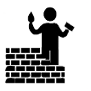 |
| 61 | Aprendizaje y estudio Incluye asistir a clases en el sistema educativo, a distancia, en cursos extracurriculares (idiomas u otra formación no brindada por la escuela), estudiar y hacer tareas, y actividades de aprendizaje y estudio complementarias, recreos y compra de materiales. Está excluido el tiempo de traslado y el de comidas y meriendas. | |
| 62 | Traslados para aprendizaje y estudio Desplazamiento desde y hasta el lugar de estudio. Incluye el tiempo de espera del transporte. | 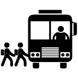 |
| 71 | Convivencia social Convivencia con familia, amigos u otras personas, asistencia a actividades comunitarias, cívicas o religiosas. La finalidad de las actividades es la socialización; incluye la comunicación vía telefónica, por Internet, etc., y la escritura de correspondencia personal (comprende correo electrónico). Incluye también la asistencia a eventos sociales (cumpleaños, casamientos, etc.). | |
| 72 | Eventos culturales y deportivos Asistencia a eventos culturales (exposiciones de artes plásticas, teatro, música, danza, museos, etc.), deportivos y de entretenimiento. | 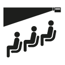 |
| 73 | Actividades artísticas y aficiones Incluye realizar, como hobby, actividades artísticas (plásticas, gráficas, literarias o escénicas), juegos de mesa o azar, juegos por medios electrónicos, etc. No incluye actividades de trabajo o estudio. | |
| 74 | Deporte y ejercicio físico Incluye práctica de deportes organizada y hacer ejercicio físico de manera informal (caminatas, excursiones, hacer aerobics, etc). No incluye actividades de trabajo o estudio. | |
| 81 | Lectura de libros, revistas, etc. Leer libros, revistas, periódicos u otro material por cualquier medio. Utilización de bibliotecas con tiempo de traslado. No incluye las que se relacionan con actividades de trabajo o estudio. | |
| 82 | Ver televisión Ver televisión o videos, exclusivamente, por cualquier medio. | |
| 83 | Escuchar radio Escuchar radio u otros medios de audio exclusivamente (música, noticias, comentarios). | |
| 84 | Usar Computadora Utilizar computadora, tableta o celular (navegar por Internet, usar redes sociales, descargar archivos, etc.). No incluye hacer pagos, compras o actividades de trabajo o estudio. | |
| 911 | Aseo y arreglo personal Comprende actividades individuales relacionadas con las necesidades fisiológicas, de salud, etc. (bañarse, cambiarse de ropa, afeitarse, maquillarse, hacer tratamientos de belleza). | |
| 912 | Cuidados personales de salud Tomarse un remedio, practicar alguna terapia, hacerse curaciones, tomarse la presión, realizar prácticas de diagnóstico (análisis, ecografías). Incluye traslados. | |
| 914 | Descanso, relajación, otras actividades personales Descansar física o psicológicamente, meditar, orar, reflexionar. Cualquier otra actividad de cuidado personal. Incluye tener relaciones sexuales. Incluye traslados. | |
| 921 | Comer, beber, ir al baño Incluye comidas habituales (desayuno, almuerzo, merienda y cena), refrigerios y colaciones. | |
| 922 | Dormir Incluye dormir de noche, la siesta o en cualquier otro momento. También se computa el tiempo en la cama antes de levantarse. No incluye dormir durante el viaje. | |
| 999 | Otro Cualquier otra actividad que no esté comprendida en las categorías anteriores. |